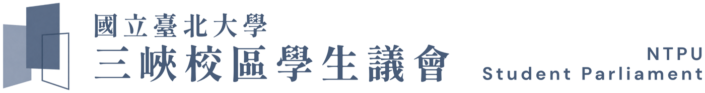

法案是學生議員或各級機關的提案。如果法案通過三峽校區學生議會和跨校區法案所必需的所有審查程序，並獲得公布，即可正式生效。
此區僅供學生議會秘書處使用。
分別輸入報告事項與討論事項的議案編號，一次產生議程與會議記錄草稿。
用頓號、逗號或空格分開，依輸入的順序排列。編號可以省略前綴，打 27-001 即可。
公開查詢議案進度，或向學生議員陳情。議員與學生會成員請由「會內系統」登入，使用提案、建議事項、索資與邀請列席備詢。
僅供學生議員與學生會成員使用。帳號密碼請洽學生議會秘書處。
議員與學生會成員專用。送出的資料會登錄至議會秘書處，部分項目會自動寄信給受文單位。
議員向貴單位索取的資料列在這裡。按「回覆」填寫回覆內容並上傳資料，系統會寄給索資議員，並副本給議會秘書處。
學生議員可透過此表單，直接向學生會各部門、學生議會秘書處或學生法院書記處調閱資料。送出後系統會自動寄信給受索單位，並同步副本給議會秘書處；受索單位回覆時，你也會收到。
對學生會或臺北大學的作為、不作為有意見，可以直接向你的學生議員陳情。送出後，系統會自動寄信通知你選擇的議員。